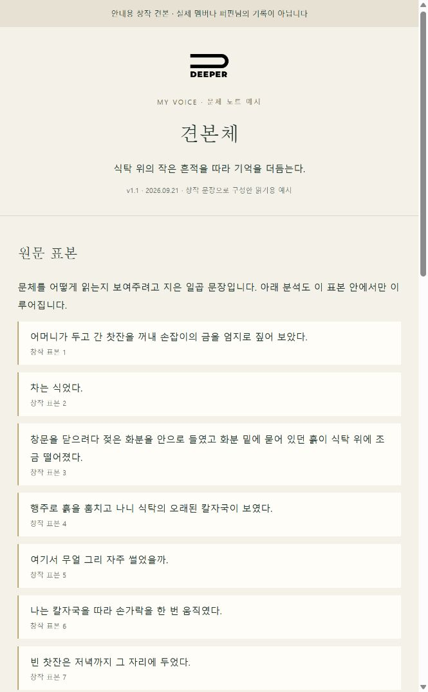
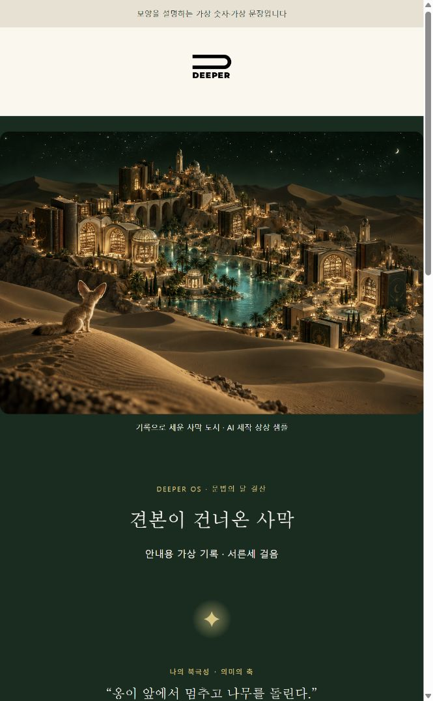

먼저, 여우에게 새옷을
이번에는 공식 플러그인 업데이트로 새옷을 입습니다. 아래 명령 두 줄을 터미널에서 한 줄씩 실행해 주세요. 첫 줄이 끝나면 둘째 줄을 실행합니다.
claude plugin marketplace update deeper-osclaude plugin update deeper-os@deeper-osWindows는 PowerShell, Mac은 터미널 앱에서 실행합니다. 위 두 줄은 대화창에 붙이는 말이 아닙니다.
- 공식 업데이트를 합니다이번 한 번은 위 두 명령으로 받습니다. 이전 버전의 새옷 절차를 안전하게 바꾸는 업데이트가 함께 들어 있습니다.
- 앱을 껐다 켭니다완료 안내를 확인하고 Claude 앱을 완전히 종료했다가 다시 엽니다. 새 대화에서 사막여우를 불러 주세요.
- 두 선물을 부릅니다아래 이름은 평소 사막여우와 이야기하던 Claude Code 대화창에 보냅니다. 하나씩, 차례로 시작합니다.
업데이트가 멈추거나 여우가 선물 이름을 알아듣지 못하면, 그 화면을 찍어 살롱에 보내 주세요. 함께 확인하겠습니다.
GIFT 01 · MY VOICE
내 목소리
자주 꺼내는 말, 문장의 길이, 끝맺는 습관. 여우가 한 달의 글을 읽고 내 문체에 이름을 붙입니다. 그 이름을 먼저 함께 정합니다.
내 목소리- 내 이름을 새긴 문체 노트 — 실제 문장 5~8개와 출처·날짜가 바탕이 됩니다.
- 다섯 층의 언어 지문 — 어휘, 리듬, 종결, 이미지의 원천, 쓰지 않는 말을 살핍니다.
문체 노트는 내 볼트에 남습니다. 여우가 내 명의로 글을 지을 때 먼저 읽는 기준이 됩니다.
문체 노트 예시 전체 열기 ↗RESULT EXAMPLE · 문체 노트의 일부

GIFT 02 · MY DESERT
나의 사막
걸은 날과 심은 씨앗, 오아시스에 머문 횟수, 손수 쓴 글자 수. 여우가 내 기록을 세어 밤하늘 지도 한 장으로 돌려줍니다.
나의 사막- 한 달의 HTML 지도 — 서른세 걸음, 씨앗과 자주 꺼낸 말이 한 장에 놓입니다.
- 내 글의 기둥과 가지 — 여우가 읽은 주제가 맞는지 먼저 함께 확인합니다.
한 달의 기록을 읽는 데 시간이 걸립니다. 한 번 만든 뒤 고칠 곳을 모아 말씀해 주시면 사용량을 아낄 수 있습니다.
사막 지도 예시 전체 열기 ↗RESULT EXAMPLE · 사막 지도의 첫 화면

AFTER THE GIFT
내 사막에서 한 장을 골라
나누고 싶은 사막 화면 한 장과 눈에 남은 문장 하나를 살롱에 올려 주세요. 문체 노트 전체는 내 볼트에 두셔도 좋습니다. 공개하고 싶은 부분만 골라 주세요.
Day 33을 아직 다 걷지 못했어요.
여우가 기록을 확인하고 완주의 날을 안내합니다. 지금 받아 보고 싶다면 그 뜻을 말씀해 주세요. 현재 쌓인 만큼 살펴보고, 재료가 적은 곳은 그대로 알려 드립니다.
이미 내 목소리를 받은 적이 있어요.
같은 말로 다시 부르면 새로 만들기보다 기존 문체 노트를 함께 다듬습니다. 어색했던 문장 하나를 가져오시면 됩니다.
글이 적거나 날짜가 빠져 있어요.
없는 기록을 지어내지 않습니다. 날짜를 확인할 수 없으면 “날짜 미기록”으로 남기고, 기록이 거의 없으면 사막 지도 제작을 기다립니다.